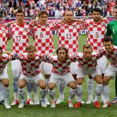
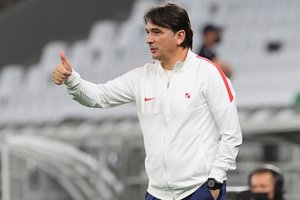

Sucessora natural da Seleção Servo-Montenegrina de Futebol, que, por sua vez, já era sucessora da Seleção Iugoslava de Futebol. Na Copa de 2010, primeira copa disputada como nação independente, não correspondeu às expectativas e foi eliminada na primeira fase.Mas o time surpreendeu a todos quando aplicou uma vitória de 1 a 0 na forte Seleção Alemã de Futebol. Em 2014,durante as Eliminatórias para a Eurocopa 2016,a Sérvia e a Seleção Albanesa de Futebol protagonizaram um episódio controverso de violência no futebol.O jogo teve que ser cancelado enquanto a Sérvia fazia 3 a 0 na Albânia.No dia seguinte,a FIFA concedeu três pontos a Albânia.Como forma de punição,o jogo seguinte entre as duas equipes (Sérvia 2X1 Albânia)teve estádio fechado e sem público.
Zlatko Dalić: mais um técnico que assumiu uma seleção emergencialmente e foi fixado. Chegou à Croácia em meio às Eliminatórias para a Copa de 2018 e sabia que só seguiria se conquistasse a classificação para a Rússia. Ele fez mais. Além de um lugar no Mundial, levou os croatas à final.
| Principais Jogadores | |||
|---|---|---|---|
| Nome | Idade | Altura | Peso |
| Dejan Lovren | 32 | 1,80M | 72Kgs |
| Domagoj Vida | 29 | 1,83M | 72kgs |
| Martin Erlic | 32 | 1,88M | 78kgs |
| Borna Barisic | 32 | 1,83M | 68Kgs |
| Josip Juranovic | 27 | 1,75m | 77Kgs |
| Borna Sosa | 24 | 1,80m | 72Kgs |
| Josip Stanisic | 29 | 1,75M | 80kgs |
| Josko Gvardiol | 26 | 1,83M | 68kgs |